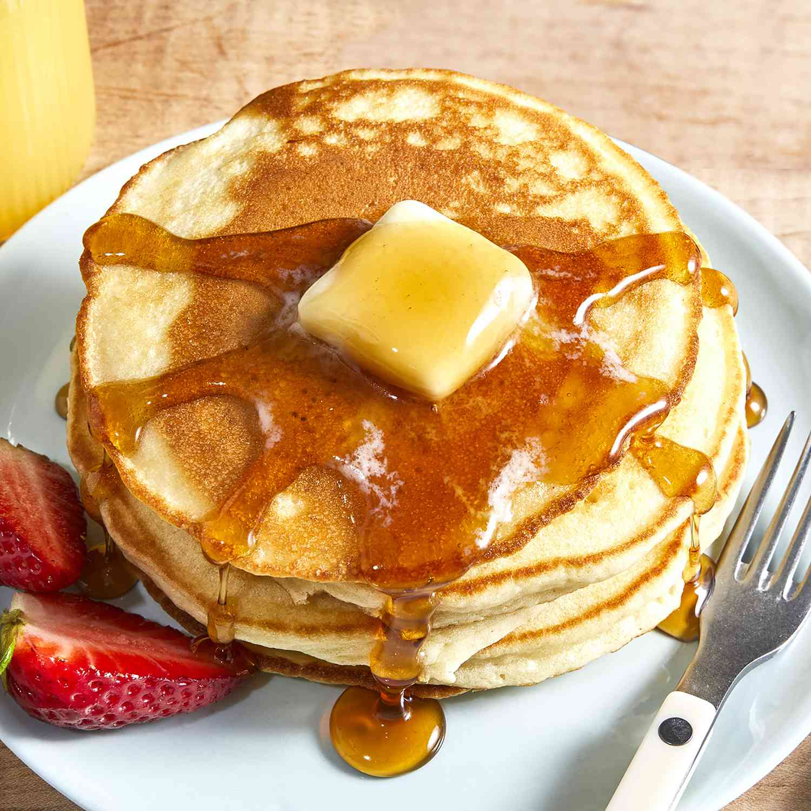

Pancakes

Description
This pancake recipe will make a perfect start to any saturday morning
Today I am sharing with you my family recipe for easy pancakes that will transform
any breakfast into a party.
Ingredients
- 1 cup all-purpose flour
- 2 tablespoons white sugar
- 2 teaspoons baking powder
- 1 teaspoon salt, or to taste
- 1 cup milk
- 2 tablespoons vegetable oil
- 1 egg, beaten
Steps
- Combine flour, sugar, baking powder, and salt
in a large bowl.
- Make a well in the center,
and pour in milk, oil, and egg. Mix until smooth.
- Heat a lightly oiled griddle or frying pan over
medium-high heat. Pour or scoop batter onto the
griddle, using approximately 1/4 cup for each
pancake; cook until bubbles form and the edges
are dry, 1 to 2 minutes. Flip and cook until
browned on the other side. Repeat with remaining
batter.